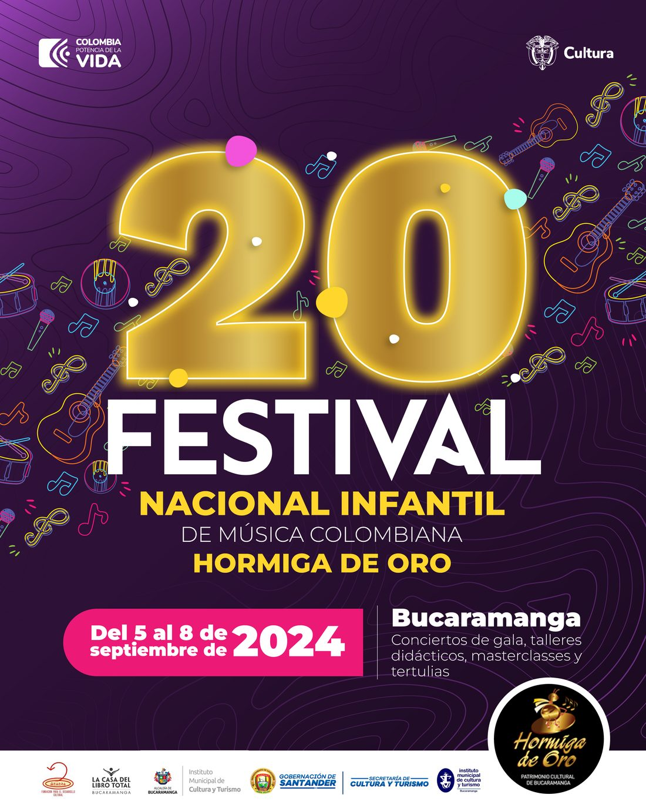

Datos generales
- Denominación
- Fundación para el Desarrollo Cultural “Ananda”
- NIT
- 900079405-4
- Dirección
- Calle 29 # 31-39
- Domicilio
- Bucaramanga, Santander – Colombia
Somos la Fundación para el Desarrollo Cultural Ananda. Desde Bucaramanga creamos espacios para que niñas y niños vivan, difundan y promuevan la música colombiana.

El Festival Hormiga de Oro
Considerado patrimonio cultural de Bucaramanga, el Festival reúne cada año, desde 2005, a las voces e instrumentos más prometedores del país. Conciertos de gala, talleres didácticos, masterclasses y tertulias que llenan los auditorios de la Ciudad Bonita.
Nosotros
Ante la carencia de espacios y escenarios generadores de proyección cultural, nace la Fundación para el Desarrollo Cultural Ananda con una meta bien definida.
Construir un espacio para el desarrollo, la difusión y la promoción de la cultura en todas sus manifestaciones. Somos una alternativa para generar, poner en marcha y gestionar proyectos que consoliden el escenario más adecuado para educar públicos y fortalecer la identidad cultural de la región.
Régimen Tributario Especial
Información de la entidad conforme al Régimen Tributario Especial. Una organización sin ánimo de lucro al servicio de la cultura.
Cifras del Estado de Situación Financiera reportado.
Contacto
¿Quieres que tu grupo participe, apoyar el Festival o conocer nuestros proyectos? Cuéntanos.